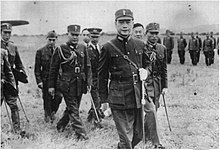
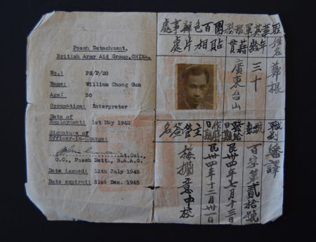
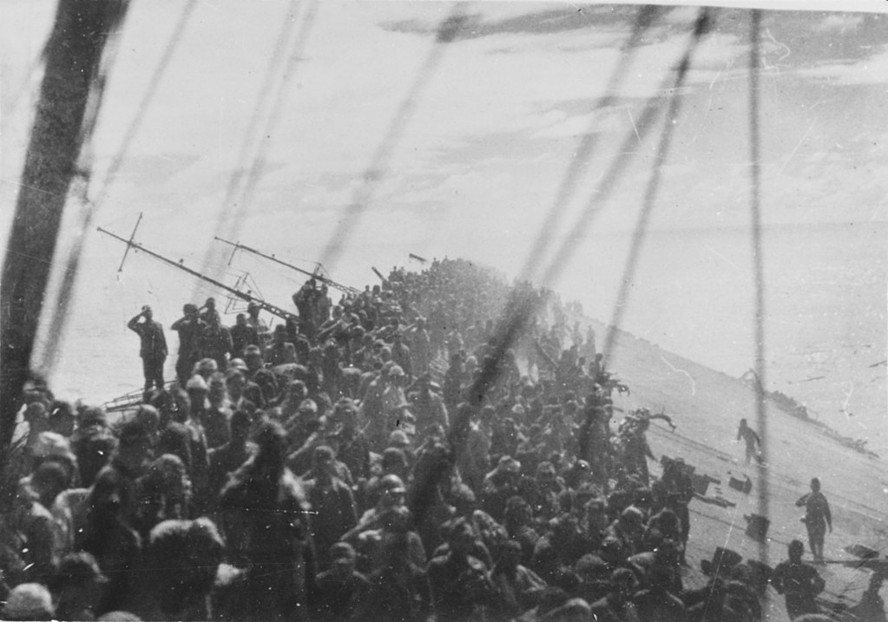
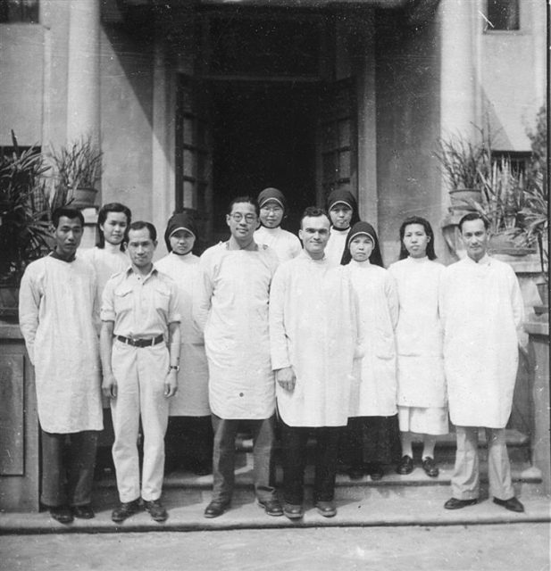

Gallery
Homepage Image
Second Sino- Japanese War
Historical Background Image

Japanese heavy carrier Zuikaku on maneuvers
Gun Chong's Story
Chong's papers
Gallery (this page)
~800 Japanese soldiers going down with the Zuikaku
Bibliography
Bill Chong at a Red Cross BAAG Hospital (3rd person from the left)